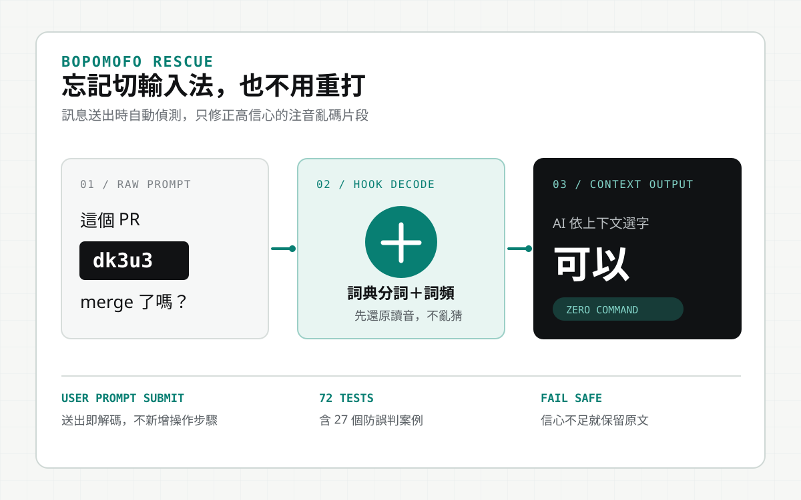
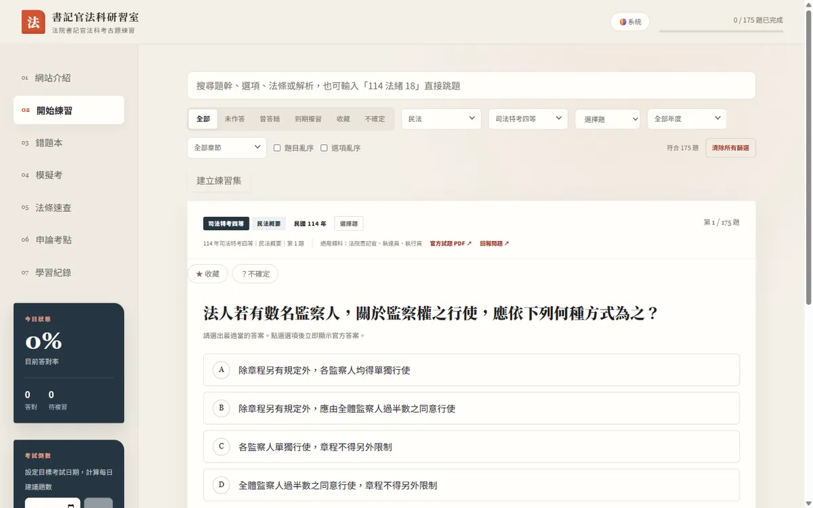

shinvo-shop 正式客戶網站
8 個正式站使用同一套 shinvo-shop 多租戶建站平台，涵蓋電商、內容與企業形象網站。
Selected Work / 案例
從平台轉型、政府標案、SaaS 上線到第一線支援，我先看清楚現場，再決定產品怎麼做。可直接開啟的正式站與試用入口放在最前面；往下則是各專案的情境、做法、結果與證據。
以下是目前在線的正式客戶網站、產品入口與可直接試用的 AI 客服。
使用同一套 shinvo-shop 多租戶建站平台，涵蓋電商、內容與企業形象網站。
LINE 生態系的進銷存 ERP；涵蓋訂單、金流、配送派工與簽收流程。
LIVE實際服務入口：liff.linerp.co
加入官方帳號後，可直接體驗文件同步、RAG 問答與對話延續。
TRYLINE ID：@594fgqbs
公司過去二十年是「一案一站」：每個客戶網站是獨立專案、各自維護，需求到上線大約 30 天，維護成本隨站數線性成長。團隊用訊息和口頭追需求，沒有統一的 Issue 與發版紀錄；同時要配合 ISO 27001 的文件與稽核要求。
供應商在 LINE 裡開賣場、商家在 LINE 裡訂貨。使用者不是工程師，多數在手機上操作：加好友、綁定通知、下單、砍價改單、簽收。任何一步卡住，他們不會回報，只會不用。
接手既有服務：舊功能要穩、新功能要進、每季要向機關簡報、要配合弱點掃描與 App 檢測。其中一項是把節目表資料介接從人工作業改成 CSV 透過雲端儲存自動同步，牽涉機關資訊部門、內部工程師與報價。
藥局的系統問題不會在辦公室發生。ERP 升級、健保申報卡住、主機或網路壞掉，都在櫃檯旁邊、病人排隊的時候發生。使用者要的不是解釋，是現在能用。
現在我做產品時的直覺——先看使用者卡在哪、驗收要自己走一遍、失敗訊息要讓人知道下一步——都是這段養成的。我不是猜使用者怎麼工作，是真的站在旁邊看過。
客戶在 LINE 問「後台這個怎麼設定」，客服要翻手冊回答，重複問題吃掉時間；也需要一個能推播公告、把沒回答到的問題收回來的入口。這是我在 Threads 上「AI 客服開發」那篇 build-in-public 文章的本體。
docs/manual 子樹做快照；自架 BGE-M3 embedding（HuggingFace TEI）；FAQ RAG 問答、對話延續、Gemini 自動重試、分類失敗改回「系統忙」。加入 LINE 官方帳號 @594fgqbs，即可直接體驗這套 RAG AI 客服。
資安公告、套件停止支援、第三方 API 強制更新與重大相容性異動散落在不同來源。等到客戶、供應商或工程師轉貼訊息才處理，容易漏掉「這個專案到底有沒有使用、正式環境跑的是哪一版、修補是否真的已部署」這些關鍵差異。我把查核條件、證據標準與開票門檻寫成固定流程，讓 AI 先做每天都該做、但很容易被忙碌吃掉的第一輪巡檢。
讀官方維護者、廠商公告與安全資料庫；一般技術新聞只當入口，不直接當結論。
比對 manifest、lockfile、repo commit、部署分支與 runtime；把「程式有用」和「正式站受影響」分開。
用專案、元件、CVE／公告別名與根因查既有 Issue；只有新證據才更新，不每天重複留言。
達到門檻才開票，寫清楚來源、版本、觸發條件、未知事項、緩解方式與建議驗收。
另一個任務只讀真實巡檢結果，區分新票、實質更新、待確認與查核失敗；沒有新票也會回報。
持續追蹤、交叉比對、找差異、整理證據、依規則去重與建立追蹤。
決定優先順序、風險接受、正式需求、修補方案、是否部署，以及何時通知客戶。
核心原則：連線失敗不等於零風險、合併不等於已部署、版本字串不等於已確認受影響。AI 可以提早看到訊號，但最後的產品與風險決策仍由人負責。
工作之外，用同一套方法做自己的工具。共同點：有 README、有測試或資料規則、有明確的「不做什麼」。
管理本機所有 AI coding agent 的 session：即時看哪些在跑、對應哪個對話、吃多少記憶體，安全結束不需要的；指定期間把散落各處的對話歸納成任務，附 token 用量，產出可以直接交出去的工作報告。支援 Claude Code／Codex／Gemini CLI，Windows 原生與 WSL。
WHY不同 agent 願意公開的資訊差很多。README 最重要的一節是「支援程度」表：哪個 agent 能精確對到 PID、哪個只能整個結束——動手前先看懂，才不會砍掉正在跑的任務。


忘記切輸入法打出的注音亂碼自動還原成中文的 Claude Code skill：這個 PR dk3u3 merge 了嗎 → 可以。送出訊息當下由 hook 解碼，零指令。
WHY詞典分詞負責把音還原對，選字交給有上下文的 AI（部屬→部署）。72 個測試裡 27 個防誤判。

司法特考四等法院書記官考古題：9 科、1,090 題官方試題、850 題逐題解析、模擬考、錯題本、間隔複習、法條速查、申論考點總覽；PWA 離線可用。
WHY解析採「爭點、法律規則、套入本題、結論」；每題可一鍵回報勘誤；申論考點在真人審稿前一律標 draft。

初級與中級 12 份官方試卷共 600 題，逐頁對照官方 PDF，每題可追溯來源與頁碼；600 題 A–D 選項解析初稿。
WHY兩階段交付：先把全部題目匯入並核對答案，才開始批次詳解。AI 獨立複核以 10 題為一批留紀錄，永遠不會被標成人工複核。
9 種 Issue 表單（錯誤、功能新增、功能修改、任務、樣式、技術調研、文件、提問、線上事故）、PR 模板、Labels 初始化腳本、Projects 與自動化教學。
WHYStatus、Priority、Iteration 放 Projects 欄位，不用 Labels 重複維護，避免同一狀態出現兩份資料。
寫 AI 協作（我怎麼交代任務給 agent、AI 審查的隱形成本、一個案子從一年變三個月）、政府標案、需求釐清與轉職。近 30 天約 10 萬次瀏覽、近 700 位追蹤。
WHY經營方法跟做產品一樣：親自登入後台讀數據、每篇記錄瀏覽與回覆、用數據修正開頭型別，而不是憑感覺。